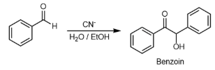
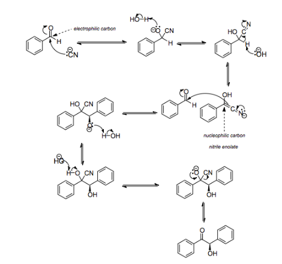

In organic chemistry, the benzoin addition is an addition reaction involving two aldehydes (-CH=O).
The reaction generally occurs between aromatic aldehydes or glyoxals (OCH-CHO), and results in formation of an acyloin (-COCH(OH)-).
In the classic example, benzaldehyde is converted to benzoin (PhCH(OH)COPh).

The reaction mechanism was proposed in 1903 by A. J. Lapworth. In the first step in this reaction, the cyanide anion (as sodium cyanide) reacts with the aldehyde in a nucleophilic addition. Rearrangement of the intermediate results in polarity reversal of the carbonyl group, which then adds to the second carbonyl group in a second nucleophilic addition. Proton transfer and elimination of the cyanide ion affords benzoin as the product. This is a reversible reaction, which means that the distribution of products is determined by the relative thermodynamic stability of the products and starting material.

1. Benzoin condensation forms:
Alcohol